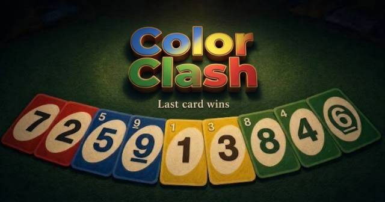

Arcade · rated Everyone · free browser game
Play Color Clash Free Online

Color Clash in the browser is the classic color-and-number shedding game: match the card, dump your hand, and watch the draw pile. It is here so a family can play a round without hunting a deck or an app. Rules stay close to the card game people already know. No account, no room code required for a quick sit-down.
How to play Color Clash in your browser
Color Clash runs in this browser tab. There is nothing to install and no account to create — open the vault, tap the cover, and the game loads in an overlay. Close it with the ✕ and the game unloads, so the next cartridge starts fresh.
Arcade cabinets are built for short, repeatable runs. Controls are one thumb or one hand on keyboard. Don't chase high score on first try — learn the rhythm of obstacles first, then go for score. Instant restart is intentional.
- On a phone or tablet: tap and swipe. The game is sized for a thumb. We disabled pinch-zoom on the play overlay so a two-finger swipe doesn't zoom the whole page.
- On a laptop: mouse and keyboard. Arrow keys and Enter also move around the vault itself. Press Esc to close the overlay.
- Offline: once the tab has loaded, most cartridges keep running if the signal drops, because the logic lives in the page. Open the game once on WiFi, then it works in airplane mode.
- Save data: high scores and favourites stay in your browser's localStorage, not on our server. Clear browser data and they disappear — we don't have cloud sync, which is better for privacy.
About this free browser game
Color Clash is filed under Arcade in the vault. It is built and hosted by Jethin Productions and served from offlinegames.art — it is not an embed from another game portal. You can verify: its files live under offlinegames.art/games/ on this domain.
Editorial standards here are ordinary: a game has to start without a login, it has to be understandable without a wiki, and it has to be something we would reopen in a spare ten minutes. It also has to be family-transparent: no hidden chat with strangers, no loot boxes, no push notifications. If it needs a tutorial that takes longer than the game, we don't add it.
Strategy guides are in Guides, and rights for every title are on the credits page. Something broken? The contact page is the fastest way to reach us. Say which cartridge and what your device is, and we fix it rather than argue.
Content rating: Everyone
No violence, no scary imagery and no punishing time pressure. Suitable to hand to a young child unsupervised.
These are our own labels rather than an official rating, and we apply them conservatively — anything on a boundary goes in the higher tier. How the three tiers work, and which games suit which ages, is set out in our guide for parents. If you think this one is in the wrong tier, tell us.
What it is like to play
Color Clash is designed for the spare 5 minutes, not a 2-hour session. No daily rewards, no energy system, no shop that sells power. You open it, play a round, close it. High score saves locally, so you can beat your own best next time without an account.
If you like quick runs, try Pop-a-Lock, Balance Ball and Sky Dodge.
FAQs
Does Color Clash work offline?
Yes, after first load. Open it once on WiFi, then turn on airplane mode and refresh — it loads from service worker cache. See what offline means.
Is it free?
Yes, free in browser, no download, no account. Ads on this page and occasional ads between rounds pay for hosting. Nothing in the game is locked behind watching an ad.
Is it safe for kids?
It is rated Everyone. No violence, no scary imagery and no punishing time pressure. Suitable to hand to a young child unsupervised. See our parent's guide for age-by-age suggestions.
More to play: open the vault for free browser games, or read the guides for offline tips.